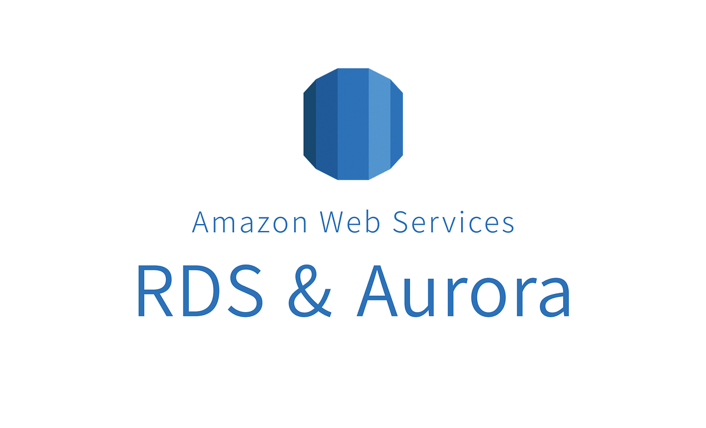
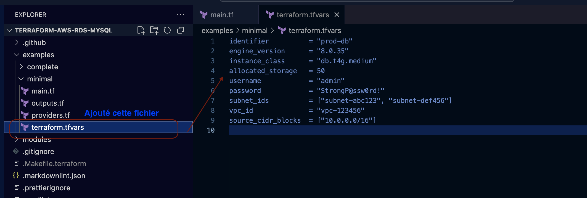
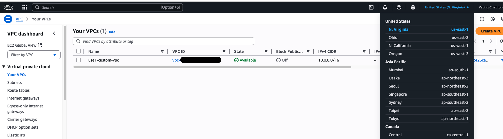
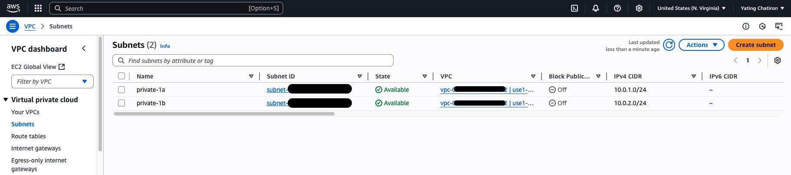
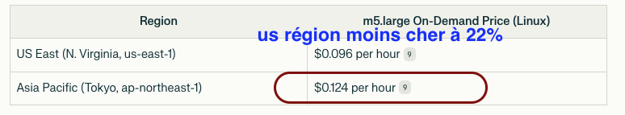
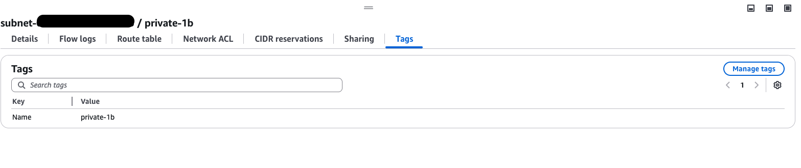
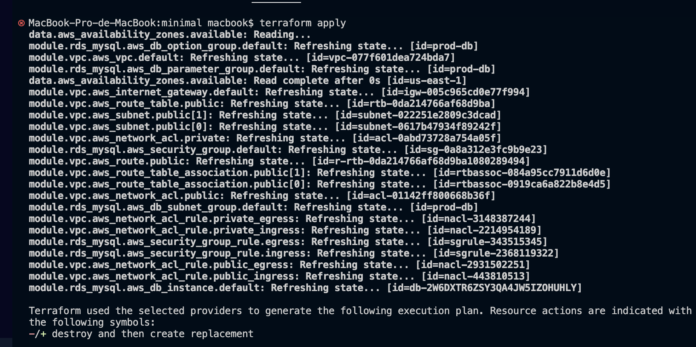
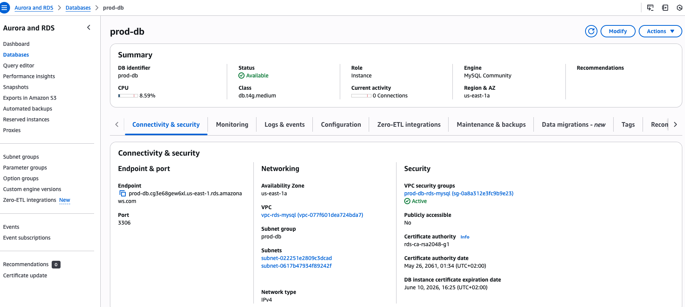

Comment ça roule, un "external Radin" sur le cloud AWS ?
03 Juin 2025, 09:11 CEST
Devops
Optimisation des coûts avec Terraform et AWS
Oui, tu as bien lu "Radin" (et non pas "Ratin") ! C’est une expression un peu étrange, peut-être même négative à première vue, mais ici je l’utilise pour désigner une manière astucieuse et maligne de consommer les ressources informatiques. Pourquoi "Radin" ? Parce que comme ce matériau, l’idée est de construire une infrastructure solide, souple et légère, optimisée et performante, mais surtout la moins coûteuse possible, tout en gardant la capacité de monter rapidement en charge sur le cloud.
Voici donc une procédure pour déployer une base de données MySQL RDS sur AWS à l’aide de Terraform, déjà optimisée pour minimiser les coûts tout en gardant un maximum de flexibilité. Let’s go !
🛠️ Scénario : Créer une base de données MySQL RDS avec Terraform, optimisée dès le départ
1ʳᵉ étape : Cloner le dépôt Terraform RDS MySQL

Puis Ajouté le fichier terraform.tfvars et ce fichier terraform.tfvars contiendra les métadonnées et les valeurs personnalisées de ta configuration.
git clone https://github.com/tmknom/terraform-aws-rds-mysql.git
cd terraform-aws-rds-mysql/examples/minimal
mkdir terraform.tfvars
🧠 Pré-requis : Connaître son environnement AWS
Si tu viens juste de créer ton compte AWS, il faut récupérer les valeurs importantes comme vpc_id, subnet_ids, etc. Pour cela, installe AWS CLI, qui te permettra de gérer tes ressources AWS rapidement, y compris les identifiants réseau.
Récupérer ton VPC ID :

aws ec2 describe-vpcs \
--filters Name=isDefault,Values=false \
--query "Vpcs[].{ID:VpcId,Name:Tags[?Key=='Name'].Value|[0]}" \
--output table
2ᵉ étape : Créer deux sous-réseaux privés dans ton VPC
Choisis deux AZ (Availability Zones), par exemple : us-east-1a et us-east-1b :

# Subnet dans us-east-1a
aws ec2 create-subnet \
--vpc-id \
--cidr-block 10.0.1.0/24 \
--availability-zone us-east-1a \
--tag-specifications 'ResourceType=subnet,Tags=[{Key=Name,Value=private-1a}]' \
--region us-east-1
# Subnet dans us-east-1b
aws ec2 create-subnet \
--vpc-id \
--cidr-block 10.0.2.0/24 \
--availability-zone us-east-1b \
--tag-specifications 'ResourceType=subnet,Tags=[{Key=Name,Value=private-1b}]' \
--region us-east-1
💡 Astuce 1 : Créer deux sous-réseaux dans des AZ différentes permet une tolérance aux pannes. Si une zone tombe, l’autre peut prendre le relais.

💡 Astuce 2 : Ici, on a choisi la régionus-east-1 pour des raisons de coût, mais si ton application cible principalement l’Europe en temps réel, préfère europe-west1 (Irlande) ou europe-west3 (Paris).
Tagger les subnets pour plus de lisibilité :

aws ec2 create-tags \
--resources \
--tags Key=Name,Value=private-1a \
--region us-east-1
aws ec2 create-tags \
--resources \
--tags Key=Name,Value=private-1b \
--region us-east-1
3ᵉ étape : Configurer Terraform
Retourne dans le dossier examples/minimal et édite le fichier terraform.tfvars :
identifier = "prod-db"
engine_version = "8.0.35"
instance_class = "db.t4g.micro"
allocated_storage = 50
username = "admin"
password = "TonMotDePasse123"
subnet_ids = ["subnet-xxx1", "subnet-xxx2"]
vpc_id = "vpc-xxxxxxx"
source_cidr_blocks = ["10.0.0.0/16"]
💡 Astuce : choisissez l’instance_class « db.t4g.micro » ou « db.t4g.small », c’est moins coûteux.
💡 Astuce stockage : La taille allocated_storage contrôle la taille du volume EBS rattaché. Avec un volume gp2, tu obtiens 3 IOPS/GiB :
- 20 GiB → 60 IOPS
- 50 GiB → 150 IOPS
- 100 GiB → 300 IOPS
50 GiB est souvent un bon équilibre : peu coûteux mais avec des performances correctes.
⚠️ Attention : Assure-toi que ton fichier main.tf utilise bien var.identifier etc. Cela rend ta configuration modulaire et réutilisable.
4ᵉ étape : Lancer les commandes Terraform

cd examples/minimal
terraform init
terraform plan
terraform apply
👀 Tu verras une infrastructure RDS créée de manière déclarative et optimisée.
⚠️ Points d’attention
- Pour MySQL 8.x, l’ancien paramètre
tx_isolationn’est plus valide. Utilisetransaction_isolationà la place dans les paramètres RDS. - Le mot de passe ne doit pas contenir les caractères
/,@,", ni d’espaces.
Réf : Amazon RDS password policy
✅ Résultat
Une base de données MySQL RDS performante, sécurisée, et déployée proprement grâce à Terraform, prête à évoluer et à résister à la charge — comme un bon vieux meuble en Radin 🌿.

🔧 Bonus : Comprendre la structure de base d’un module Terraform
Si vous débutez avec Terraform, comprendre sa structure est essentiel pour gérer l’infrastructure efficacement. Voici un aperçu rapide de l’organisation d’un module Terraform, basé sur mon expérience avec la documentation et des projets concrets.
Chaque service cloud — comme AWS RDS, ECR, ALB, etc. — peut être encapsulé dans un module Terraform. Un module est un conteneur regroupant plusieurs ressources utilisées ensemble. Voici les fichiers principaux d’une structure typique :
terraform-aws-rds-mysql/
├── variables.tf # Interface du module : définit les variables d’entrée (NE PAS MODIFIER)
├── main.tf # Implémentation du module : contient la logique de l’infrastructure (NE PAS MODIFIER)
├── Makefile # Optionnel : raccourcis CLI pour les commandes Terraform
└── examples/
└── minimal/
├── variables.tf # Définit les variables spécifiques à cet exemple
├── main.tf # Appelle le module RDS
└── terraform.tfvars # Vos valeurs de variables vont ici
📁 Explication des fichiers clés
main.tf : C’est ici que les ressources principales de l’infrastructure sont définies. Considérez-le comme le plan de ce que Terraform va provisionner (par exemple, une instance RDS AWS).
variables.tf : Ce fichier définit les paramètres d’entrée attendus pour le module, y compris leur type (string, bool, number, etc.) et les valeurs par défaut optionnelles.
terraform.tfvars (optionnel) : Ce fichier attribue des valeurs spécifiques aux variables déclarées dans variables.tf. Il est particulièrement utile pour tester ou ajuster les paramètres de l’infrastructure, comme la taille de l’instance ou les paramètres de sauvegarde, sans modifier le code du module.
output.tf (non montré ci-dessus) : Utilisé optionnellement pour exposer des valeurs du module, comme les URL des points de terminaison ou les ID des ressources.
🧠 Comment Terraform utilise ces fichiers
Initialisation : Exécutez terraform init pour initialiser le répertoire de travail.
Planification : Utilisez terraform plan pour prévisualiser ce qui sera créé ou modifié.
Application : Appliquez la configuration avec terraform apply.
Lorsque vous exécutez ces commandes, Terraform :
- Analyse
main.tfpour comprendre quelles ressources créer. - Utilise
terraform.tfvarspour injecter des valeurs spécifiques dans les variables. - Se réfère à
variables.tfpour valider les types et les exigences des entrées.
⚠️ Conseil pro : Si vous ne définissez pas correctement vos variables dans variables.tf, ou si vous oubliez de les assigner dans terraform.tfvars ou via CLI/environnement, Terraform signalera une erreur de "variable non définie".
Vous pouvez consulter la merge request de changement du code Terraform via https://github.com/tmknom/terraform-aws-rds-mysql/pull/34.
🔜 Et ensuite ?
Dans la prochaine partie, on optimisera le déploiement d’une instance EC2 de façon tout aussi "Radinesque" : légère, cost-effective et résiliente !